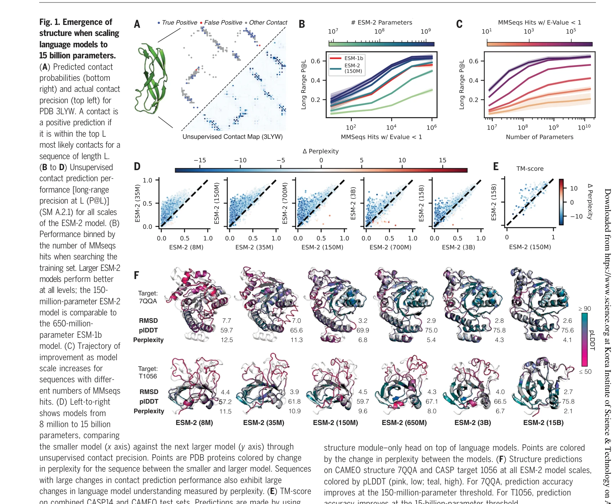
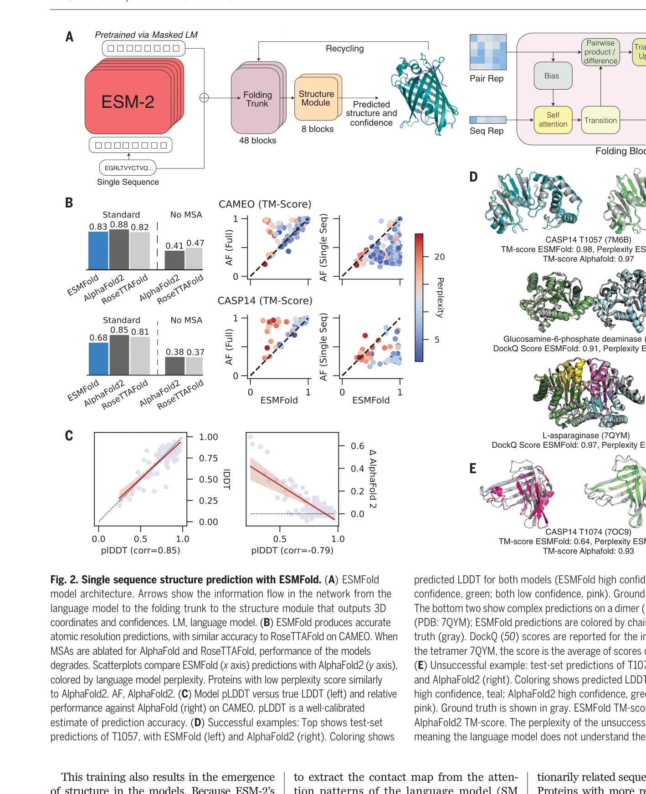

저자: Zeming Lin, Halil Akin, Roshan Rao, Brian Hie, Zhongkai Zhu, Wenting Lu, Nikita Smetanin, Robert Verkuil, Ori Kabeli, Yaniv Shmueli, Allan Dos Santos Costa, Maryam Fazel-Zarandi, Tom Sercu, Salvatore Candido, Alexander Rives | 날짜: 2023-03-17 | DOI: 10.1126/science.ade2574

Fig. 1. Emergence of
15억 개 파라미터 규모의 protein language model을 훈련하여 다중 서열 정렬 없이 단일 서열에서 원자 수준의 단백질 구조를 직접 예측하는 ESMFold를 개발하고, 6억 개 이상의 메타게놈 단백질 구조를 예측하여 ESM Metagenomic Atlas를 구성했다.

Fig. 2. Single sequence structure prediction with ESMFold. (A) ESMFold
Fig. 1. Emergence of
총평: Language model의 규모 증가에 따른 단백질 구조의 창발적 출현을 체계적으로 증명하고, MSA 없이 단일 서열로 원자 수준 구조를 고속 예측하는 ESMFold를 통해 단백질 구조 예측의 패러다임을 전환했으며, 6억 개 메타게놈 단백질의 대규모 구조 데이터베이스 구축으로 자연 단백질의 구조적 다양성에 대한 새로운 생물학적 통찰을 제공하는 획기적 연구이다.